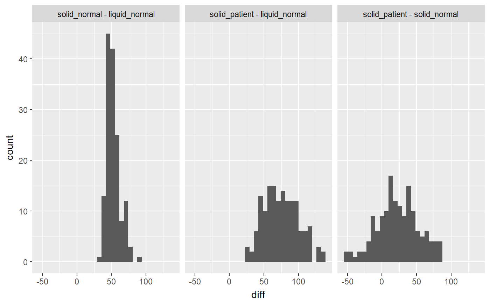

R/coef_diff_by_group.R
coef_diff_by_group.RdGiven a Stan fit with grouping to 13C breath test curves,
computes point estimated and Bayesian credible intervals for all group pair
differences, for examples of the half emptying time t50.
coef_diff_by_group.breathteststangroupfit(fit, mcp_group = NULL, reference_group = NULL, ...)
| fit | Object of class |
|---|---|
| mcp_group | Not used, always all pairs are compared |
| reference_group | Not used |
| ... | Not used |
A tibble of class coef_diff_by_group_stan with columns
Parameter of fit, e.g. beta, k, m, t50
Method used to compute parameter. exp_beta refers to primary
fit parameters beta, k, m.
Which pairwise difference, e.g solid - liquid
Point estimate (chain mean) of the difference
Lower and upper 95 percent credible interval of difference.
The chains of pairwise differences are returned as a attribute chain
for use in plotting. See example below how to use these to display difference histograms.
library(dplyr) library(breathtestcore) data("usz_13c", package = "breathtestcore") data = usz_13c %>% dplyr::filter( patient_id %in% c("norm_001", "norm_002", "norm_003", "norm_004", "pat_001", "pat_002","pat_003")) %>% cleanup_data() fit = stan_group_fit(data, iter = 300, chains = 1) # Use more iterations! cf = coef_diff_by_group(fit) cc = attr(cf, "chain") %>% filter(key == "t50_maes_ghoos", abs(diff) < 200) %>% mutate( groups = paste(group2, group1, sep = " - ") ) str(cc)#> 'data.frame': 450 obs. of 7 variables: #> $ key : chr "t50_maes_ghoos" "t50_maes_ghoos" "t50_maes_ghoos" "t50_maes_ghoos" ... #> $ value1: num 105.2 96.4 95.4 99.6 93.9 ... #> $ value2: num 177 139 140 148 143 ... #> $ group1: chr "liquid_normal" "liquid_normal" "liquid_normal" "liquid_normal" ... #> $ group2: chr "solid_normal" "solid_normal" "solid_normal" "solid_normal" ... #> $ diff : num 71.9 43 44.3 48.5 49.4 ... #> $ groups: chr "solid_normal - liquid_normal" "solid_normal - liquid_normal" "solid_normal - liquid_normal" "solid_normal - liquid_normal" ...#>#> # A tibble: 24 x 7 #> parameter method groups estimate conf.low conf.high p.value #> <chr> <chr> <chr> <dbl> <dbl> <dbl> <dbl> #> 1 beta exp_beta solid_normal -~ 0.0874 -1.70e-1 3.44e-1 7.05e- 1 #> 2 beta exp_beta solid_patient ~ 0.117 -1.58e-1 3.92e-1 5.78e- 1 #> 3 beta exp_beta solid_patient ~ 0.0296 -2.27e-1 2.86e-1 9.61e- 1 #> 4 k exp_beta solid_normal -~ -0.00373 -5.35e-3 -2.11e-3 1.75e- 7 #> 5 k exp_beta solid_patient ~ -0.00551 -8.22e-3 -2.80e-3 4.49e- 6 #> 6 k exp_beta solid_patient ~ -0.00178 -4.38e-3 8.20e-4 2.42e- 1 #> 7 m exp_beta solid_normal -~ -15.5 -2.00e+1 -1.11e+1 7.33e-15 #> 8 m exp_beta solid_patient ~ -4.48 -2.44e+1 1.54e+1 8.54e- 1 #> 9 m exp_beta solid_patient ~ 11.1 -8.72e+0 3.08e+1 3.82e- 1 #> 10 t50 bluck_coward solid_normal -~ 14.9 3.89e+0 2.59e+1 4.31e- 3 #> # ... with 14 more rows